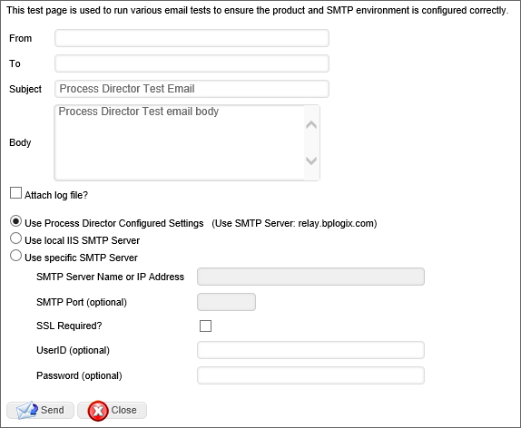

|
|
Lesson Contents | In this Lesson, You will learn some of the other general troubleshooting options available in Process Director. |

This page allows you to set up an email and have Process Director send it, testing Process Director’s ability to send emails. The email body and content can be configured, as well as the server from which the email is sent.
From the Troubleshooting section, you can navigate to the Email Tests page by clicking the Run Email Tests button.
The Email Tests screen enables you to configure a number of options for sending a test email.
The email address from which the email is sent.
The email address to which to send the test.
The Subject of the test email message. A simple default value is supplied, as illustrated in Figure 65.
The Body of the test email message. A simple default value is supplied, as illustrated in Figure 65.
A check box that, when checked, will send a log file as an attachment to the email.
A radio button that, when selected will send the test email using the SMTP settings that have been configured for the Process Director installation.
A radio button that, when selected, will send the test email using the locally configured SMTP server for the IIS installation that is running on the local machine containing the Process Director installation.
A radio button that, when selected, enables you to specify a different SMTP server. When this option is selected, the following SMTP properties for the server will be enabled:
A check box that, when checked, will send the test email via the encrypted SSL layer, if applicable.
The User ID of the email account from which to send the email.
The Password for the user account from which to send email.
Once you have configured the test email settings, you can send the test email by clicking the Send button.
From the troubleshooting section, clicking the Help button will open a new tab that displays the Product Documentation web site for Process Director.